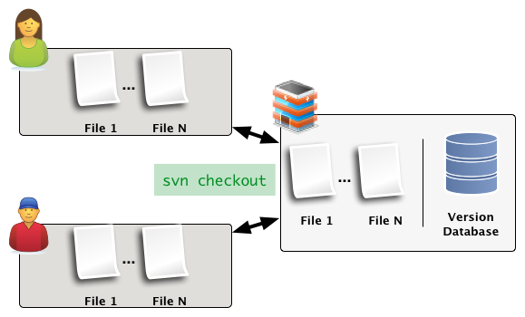
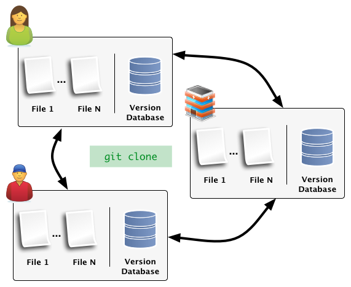
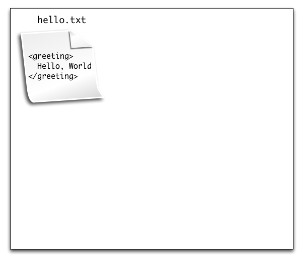
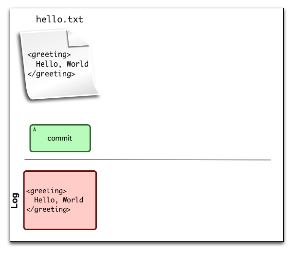
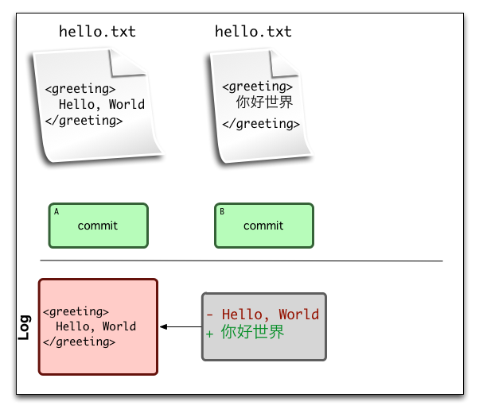
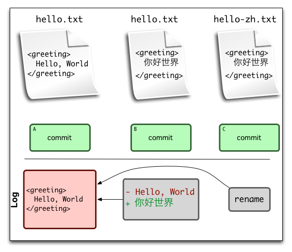
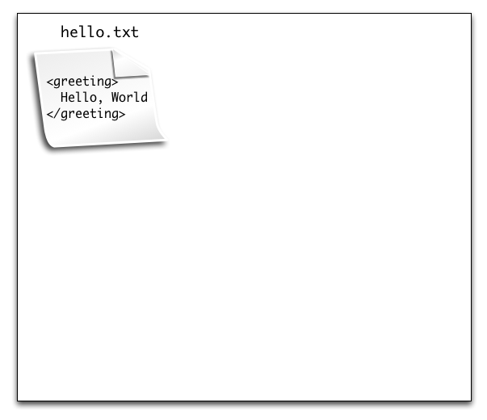
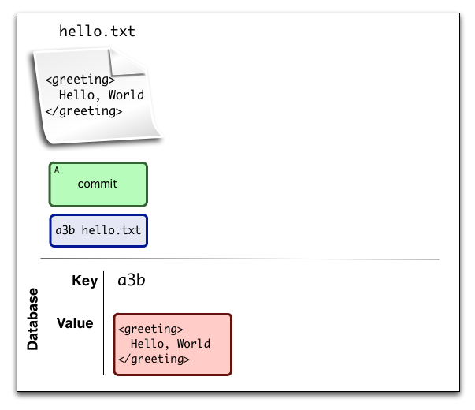
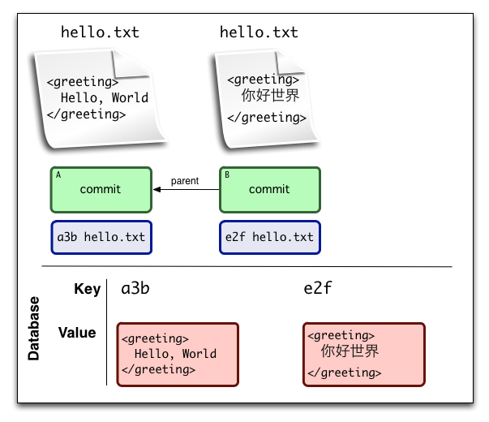
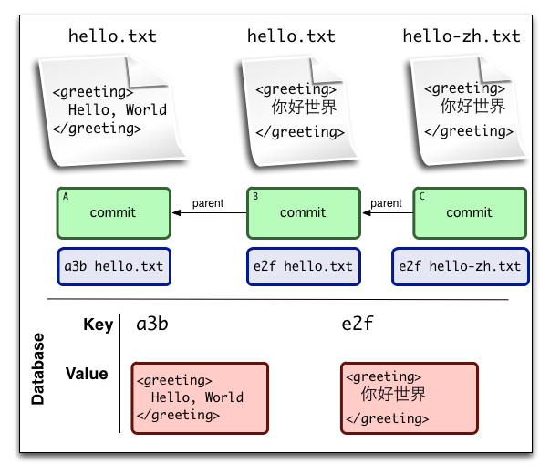

Collaborating with Git
Ted Benson
@edwardbenson / eob@csail.mit.edu
Goal
Hands on activities to get you acquainted with git workflow.
Intro to Git
Git is an open source, distributed, version control system designed for speed and efficiency.
Distributed v. Centralized
| Distributed | Centralized |
|---|---|
|
|
Centralized Version Control
Distributed Version Control
How do you Track Versions?
File Deltas: Database stores a sequence of diffs for each file.
Snapshots: Database stores snapshots of the whole repository.
File Delta Version Tracking
File Delta Version Tracking
File Delta Version Tracking
File Delta Version Tracking
Snapshot Version Tracking
Snapshot Version Tracking
Snapshot Version Tracking
Snapshot Version Tracking
Personal Version Control
Exercise 1
- Creating a repository
- Committing changes
- Navigating through history
Creating a Repository
| git init | Create from Scratch |
| git init --bare | Create from Scratch "Server-mode" |
| git clone | Copy a Repo |
Branches
Exercise 2
Multiple Repositories (SSH)
Exercise 3
Github
Exercise 4
Github
Exercise 5
Attribution
Thanks to:
- Scott Chacon's Github presentation, which provided a template for much of the git intro.
- Clip Art from: